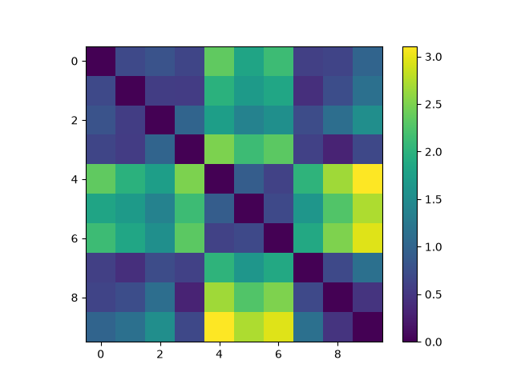
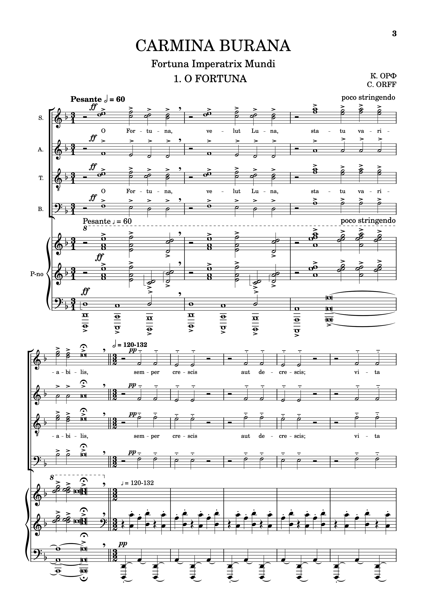
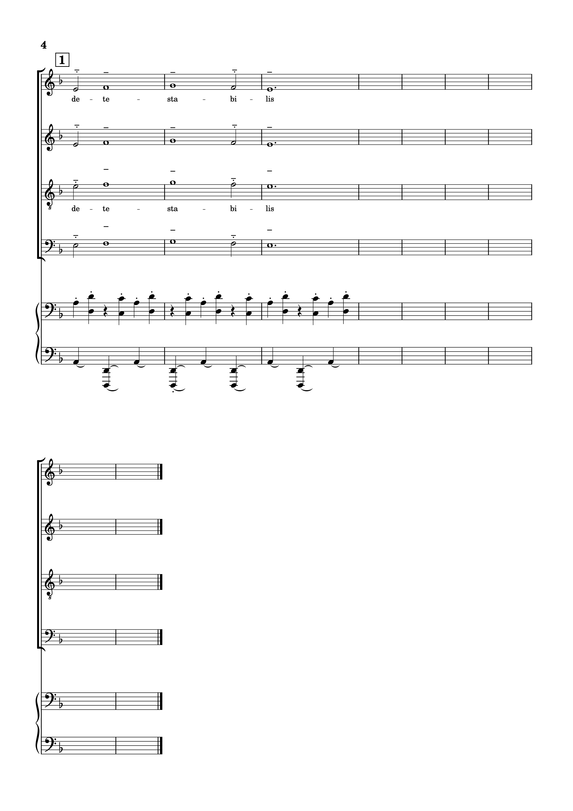
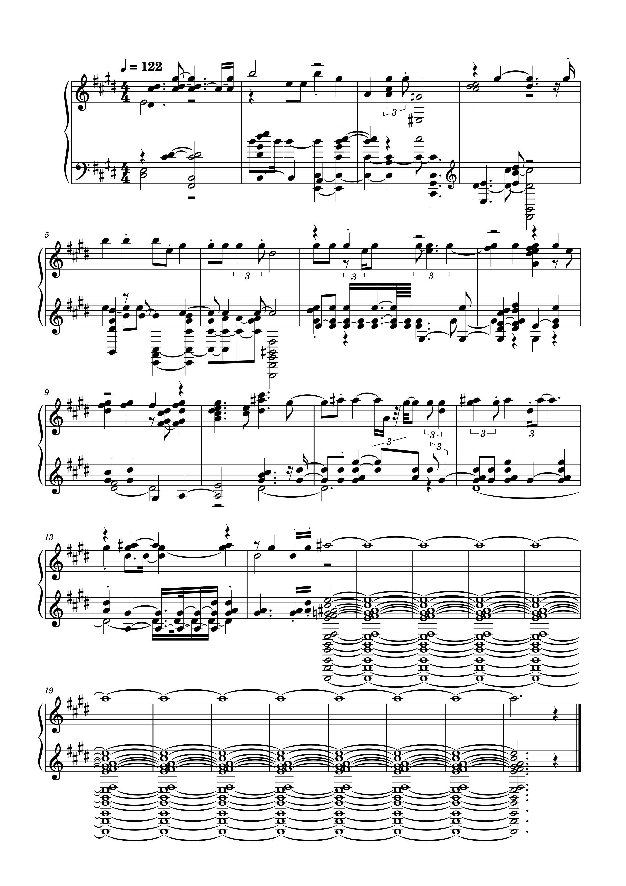

MCA-2026: Carmina Burana by Carl Orff
[TO DO: task 2 reflection]
Replace the country tracks with 3 tracks that relate to your portfolio's theme. Generate a similarity matrix.

Open your piece of music from Week 2 in MuseScore. Export it as a WAV file and as an image file. Open the WAV file in SonicVisualizer. Transcribe the file using the same process as the Group activity on Tuesday. Open the MIDI file in MuseScore. Export it as an image. In your portfolio, display both images and compare the transcription, reflecting on its accuracy and identifying any information that has been lost (max 200 words).


